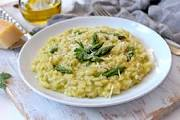

Home
Risotto

Description
This recipe creates a simple broccoli risotto that will fill the whole family. Feel free to experiment with the ingredient proportions!
Ingredients
- 1 large head of broccoli
- 300g of medium grain rice
- 1.5L of chicken or vegetable stock
- 1 onion
- 50g anchovies
- 100g of Parmesan / Gorgonzola cheese
Steps
- Bring the stock to a simmer in a large pot.
- Slice up the onion and the stalk of the brocolli, cutting the florets into smaller pieces.
- Add the onion and broccoli stalk to a large, non-stick frypan, letting it roast for a few minutes. Add in the anchovies, and stir them around.
- Pour in the rice, leaving it to toast for 5 minutes.
- Using a ladle, scoop a ladleful of stock and spread it around the rice, stirring to mix. Let it cook for a couple of minutes until the rice has absorbed the stock, then repeat adding ladles of stock.
- When you've used around half of the stock, add in the broccoli florets and stir them into the rice.
- When you have only a few ladelfuls of stock left, shred the cheese and sprinkle it into the rice. Then add the last of the stock.
- After the last of the stock has been absorbed, turn the heat off and leave it to sit for 2 miunutes, then serve.